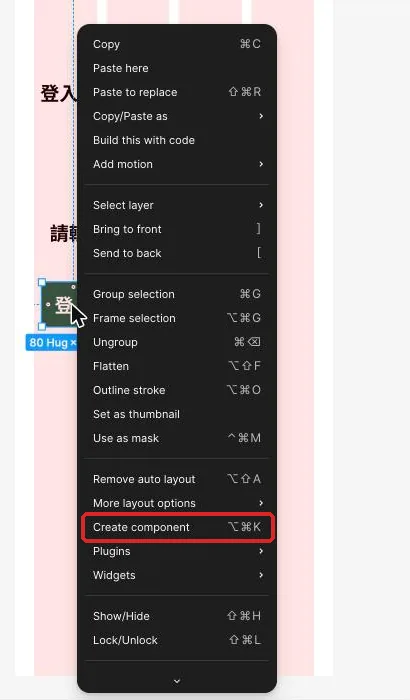
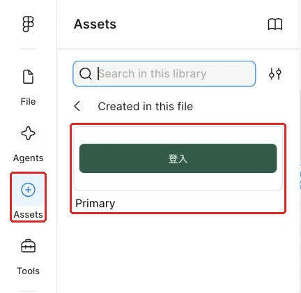
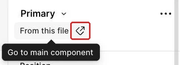
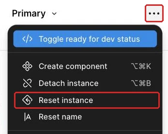

改一次來源，讓多個按鈕一起更新
工作室的登入、詳情與確認畫面都需要按鈕，這堂建立共用來源與圖示元件，讓外觀更新不必逐顆修改。
從會自動排列的登入按鈕接著做
工作室待處理清單接下來會出現更多動作：登入畫面要有「登入工作室」，任務詳情要有「標記完成」，確認畫面也需要「取消」。若每次都複製一般 Frame，三顆按鈕看起來相似，彼此卻沒有關係；日後修改圓角或字重時，很容易漏掉其中一顆。這堂要建立一個共用來源，再讓各個畫面使用它。
先找出上次做好的登入卡片與其中的練習按鈕，確認按鈕外框包住 Label 文字，並以 Auto Layout 維持置中與內距。開啟本堂起始材料，對照主元件、三個使用處與測試區的圖層命名；完成後，用完成檢查表核對同步、覆寫與修復結果。沒有上次成果時，先回到讓文字變長時，容器與按鈕一起排好，依該頁規格表補做登入卡片與按鈕，約需 20～30 分鐘。
這次的核心是分清楚兩種修改。所有按鈕都應共享的外觀回到主元件調整；只屬於某個情境的文字與圖示留在使用處。每次動手前先說出「這是共用規則，還是單一畫面的差異」，就能減少改錯位置。
先想清楚：來源管共同規則，使用處保留情境差異
這一節要理解 Main component（主元件）與 Instance（使用處）的關係。主元件保存共同結構與預設外觀；使用處帶著來源連結，可以放在不同畫面中。修改主元件的共同屬性時，未被個別改過的使用處會同步更新。
Override（覆寫）是使用處自己的差異。例如詳情畫面的按鈕把 Label 改成「標記完成」，這個文字只屬於該情境。主元件圓角改變時，詳情按鈕仍會跟著變圓，但文字會保留。這讓設計同時具有一致性與彈性。
| 要修改的內容 | 適合修改的位置 | 原因 |
|---|---|---|
| 所有按鈕共同的圓角 | 主元件 | 每個使用處都應遵守同一形狀規則 |
| 所有按鈕共同的內距 | 主元件 | 觸控範圍與文字留白要一致 |
| 某個畫面的動作文字 | 該使用處 | 文案要符合當下工作情境 |
| 某個使用處需要不同圖示 | 該使用處的巢狀元件 | 保留按鈕結構，只交換圖示來源 |
| 某個使用處誤改的填色 | 重設該項覆寫 | 回到來源的共同設定 |
| 共用結構新增一個內層 | 主元件 | 所有使用處需要同一層級 |
一般複製 Frame 只產生一個獨立副本。它不記得來源，因此修改原物件後，副本維持原樣。使用處則保留與主元件的連結；在 Layers 或右側設定中選到使用處時，可以回到來源，也能看出哪些內容已經覆寫。
這種關係適合處理重複、結構相同的介面元素。按鈕是最容易觀察的例子：共同的高度、內距、對齊、填色和圓角由來源管理，Label 依登入、完成或取消等情境調整。圖示也能有自己的主元件，再以使用處放進按鈕，形成「元件裡面放元件」的巢狀關係。
覆寫可以視為使用處在共同規則上留下的一張便條。文字覆寫告訴 Figma 這裡要使用自己的 Label；填色覆寫表示這一顆暫時採用自己的顏色；交換圖示則指定這一顆要顯示哪個圖示來源。主元件更新時，未覆寫屬性繼續同步，已覆寫屬性維持自己的值。
命名則幫助你在 Layers 與 Assets 判斷角色。名稱中的斜線會形成分類，例如 Button / Primary 會收在 Button 群組，Icon / Check 與 Icon / Plus 會收在 Icon 群組。這種命名反映家族與用途，之後尋找使用處會比「Component 1」快得多。
示範：建立來源，再放入三個使用處
這一節會先整理主元件，再用兩種方式取得使用處。所有主線名稱與設計值集中在表格，步驟則專注於建立連結、修改來源與觀察同步。
| 類型 | 圖層名 | 規格 | 用途 |
|---|---|---|---|
| 主元件 | Button / Primary | H 48、水平 Padding 16、垂直 Padding 12 | 共用主要按鈕來源 |
| 按鈕文字 | Label | 套用 Type / Label | 各使用處可覆寫的文案 |
| 共用外觀 | Button / Primary | Primary 底、白字、圓角 8 | 全課主要按鈕規則 |
| 登入使用處 | Button / Login | 寬度 Fill container | 「登入工作室」 |
| 完成使用處 | Button / Complete | 寬度 Hug contents | 「標記完成」 |
| 取消使用處 | Button / Cancel | 寬度 Hug contents | 「取消」 |
| 同步測試 | 主元件圓角 | 8 → 16 → 8 | 觀察三個使用處更新 |
- 複製上次的練習按鈕到手機畫面外，命名為
Button / Primary（主要按鈕）；完成後，畫布上會有一顆可作為共用來源的完整按鈕。 - 依規格表檢查外框、
Label、尺寸、內距、對齊、填色與圓角，再在按鈕上按右鍵選 Create component（快捷鍵 Ctrl+Alt+K，Mac 為 Option+Command+K）；完成後，Layers 裡的圖示會變成元件符號，物件成為可供插入的來源。

- 打開左側 Assets，在「Created in this file」找到按鈕，把元件拖入登入卡片；完成後，卡片裡會出現一個與主元件連結的使用處。
- 把登入使用處命名為
Button / Login（登入按鈕），再雙擊進入它的Label文字層，改成規格表文案；完成後，文字會符合登入情境，來源保持原本預設。 - 回到左側 Assets 的「Created in this file」，再拖一次同一元件到手機外的測試區，命名為
Button / Complete（完成按鈕）；完成後，畫布會出現第二個連結到相同來源的使用處。

- 把完成按鈕的 Label 改成規格表文案；完成後，兩個使用處會有不同文字，但共同外觀仍一致。
- 複製一個既有使用處，命名為
Button / Cancel（取消按鈕），再修改 Label；完成後，第三個使用處會保留同一來源連結。 - 選取主元件，把圓角從規格值改成測試值；完成後，三個使用處會一起呈現更圓的外觀，各自文字仍保留。
- 把主元件圓角恢復為規格值；完成後，三個使用處會同步回到全課共用的形狀。
- 選取完成按鈕，點右側元件名稱下方「From this file」旁的箭頭圖示（Go to main component）；完成後，畫布視角會回到
Button / Primary，讓你確認來源位置。

這次同步測試刻意只改一個屬性。若同時改顏色、圓角與字重，使用處結果不同時就難以判斷是哪個覆寫造成。先改圓角、觀察三個使用處、再恢復原值，就能把來源連結和個別文字覆寫分開驗證。
紀錄時可以使用四欄：修改位置、修改屬性、預期影響、實際結果。第一筆寫主元件圓角，預期三個使用處同步；第二筆寫完成按鈕的 Label，預期只有目前使用處改變。這份紀錄把畫面變化和你的判斷連在一起。
跟著做：先預測，再分別改來源與使用處
這一節會減少操作提示，讓你在每次修改前先預測影響範圍。紀錄「改哪裡、預期誰改變、實際誰改變」，比只看最後三顆按鈕長得一樣更能理解元件關係。
- 在登入按鈕把 Label 改成另一句登入文案，先預測其他兩個使用處會不會改變；完成後，把實際結果寫進紀錄。
- 回到主元件修改共同字重，先預測三個使用處的結果；完成後，觀察未覆寫字重的文字是否同步。
- 在取消按鈕暫時覆寫填色，再回主元件修改共同填色；完成後，比較取消按鈕與另外兩個使用處的反應。
- 選取取消按鈕，點右側元件名稱列的 ⋯，選 Reset instance；完成後，使用處會回到來源的共同設定，Label 也會回到來源預設。

- 還原取消按鈕需要的情境文字，再只重設一個個別屬性做比較；完成後，紀錄全部重設與單項重設對文案的不同影響。
- 從完成按鈕使用 Go to main component 回到來源，修正一個真正屬於所有按鈕的共同屬性；完成後，三個使用處會呈現一致變化。
- 將所有測試屬性恢復為規格表設定，保留三種情境文字；完成後，主線畫面可繼續沿用同一來源。
完成這組測試後，把紀錄中的「預期」和「實際」逐列比較。兩者不同時，先看該屬性是否已在使用處覆寫，再看目前選到的是主元件還是使用處。這個順序能把問題縮小到一個屬性，避免把三顆按鈕全部重新製作。
不確定該改哪裡時再展開
先問這個改動是否應出現在每個按鈕；答案是肯定時回主元件，只有目前畫面需要時留在使用處。
把共用來源集中到 Components 元件區
按鈕、圖示與之後的表單控制項會愈來愈多，這一節沿用上次用過的 Section（區段）操作，把來源集中管理。Section 只是畫布上的整理範圍，手機畫面與使用處仍留在產品流程中；選取來源時，不必在多張畫面之間搜尋。
| 元件區內容 | 命名 | 放置原則 |
|---|---|---|
| Section | Components | 放在產品畫面外，保留可擴充空間 |
| 按鈕來源 | Button / Primary | 只放主元件，使用處留在各畫面 |
| 圖示來源 | Icon / Check 等 | 同一家族排在一起 |
| 說明文字 | Reference / Component rules | 記錄可覆寫內容與共用規則 |
- 沿用上次用過的 Section，按 Shift+S；完成後游標會切換成區段工具。
- 在手機畫面外拖出一個足以放來源的區段，命名為
Components；完成後，畫布上會出現有標題的整理範圍。 - 把按鈕主元件移入元件區，使用處留在登入與測試畫面；完成後，來源與實際使用位置會分開。
- 把來源命名確認為
Button / Primary；完成後，Assets 會依斜線把它收進 Button 群組。 - 在元件區旁加入簡短規則，寫下「共用外觀回來源修改；情境文字與圖示在使用處調整」；完成後，之後增加元件時仍能判斷修改位置。
Section 不會改變元件同步關係。移動主元件後，既有使用處仍連到同一來源；若使用處失去連結，應檢查自己是否搬動了普通 Frame，而非真正的主元件。
把圖示做成元件，再放進按鈕
文字已經能在使用處改寫，圖示也可以採相同方法管理。先開啟練習用圖示包，確認檔名與用途；這次一次建立勾選、加號、返回、時間、警告與向右箭頭六個 SVG。SVG 拖進 Figma 後仍是向量；次要按鈕與一般畫面上的圖示沿用 Text，放進 Primary 按鈕的圖示則改用白色 Card，確保深綠底上的線條清楚可見。
| 檔案 | 元件名稱 | 先用在哪裡 |
|---|---|---|
icon-check.svg | Icon / Check | 完成與確認動作 |
icon-plus.svg | Icon / Plus | 新增動作 |
icon-arrow-left.svg | Icon / Arrow Left | 返回動作 |
icon-clock.svg | Icon / Clock | 期限與時間資訊 |
icon-alert.svg | Icon / Alert | 警告與錯誤提示 |
icon-chevron-right.svg | Icon / Chevron Right | 前往下一層內容 |
- 從電腦上的
assets/shared/icons/資料夾，把icon-check.svg拖進Components；完成後，畫布上會出現可選取線條的向量圖示。 - 在圖示上按右鍵選 Create component，命名為
Icon / Check；完成後，Assets 的 Icon 群組會出現第一個圖示來源。 - 以相同方式匯入其餘五個 SVG，分別建立並依規格表命名圖示主元件；完成後，六個來源會收在同一群組。
- 選取每個圖示內的線條，在 Stroke 套用
Text顏色變數；完成後，六個圖示會使用次要按鈕與一般畫面的文字色彩規則。 - 從 Assets 把
Icon / Check拖到Button / Primary主元件的Label左側；完成後，按鈕來源內會出現一個圖示使用處，Auto Layout 會把圖示與文字排成一列。 - 選取 Primary 按鈕內的勾選圖示使用處，把 Stroke 改套
Card；完成後，白色圖示在Primary底上清楚可見，圖示主元件仍保留Text給其他情境使用。 - 檢查圖示與文字的垂直置中，再調整兩者之間的 Gap；完成後，所有按鈕使用處都會得到相同的巢狀結構。
- 選取完成按鈕使用處裡的勾選圖示，在右側元件名稱下拉改選
Icon / Plus；完成後，只有這顆按鈕會顯示加號，其餘使用處仍顯示勾選。 - 回到
Icon / Check主元件調整一次線條顏色，再恢復Text；完成後，一般畫面的勾選圖示會同步，Primary 按鈕內的白色覆寫與已交換成加號的使用處仍保留各自設定。
這個結果同時包含兩層連結：外層按鈕連到按鈕來源，內層圖示連到圖示來源。按鈕的高度、內距與圓角由外層管理；圖示線條與形狀由內層管理；某個使用處要換圖示時，只改內層來源選擇。
看兩種元件整理方式，判斷哪一種較容易擴充
這一節要判斷來源、使用處與巢狀元件是否放在正確位置。版本一把六個圖示直接畫進各顆按鈕或畫面，主元件散落在手機畫面之間；其中一顆加號顏色不同，設計者逐顆尋找。版本二用 Components 集中主元件，圖示依 Icon / 名稱 歸類，按鈕內放圖示使用處；某顆按鈕需要加號時，只交換那個使用處的圖示來源。
請判斷哪一版更適合工作室後續新增畫面，並從「來源位置、共同更新、單一情境差異」三個角度說明。再想一想：如果加號線條顏色與其他圖示不同，你會先回到按鈕來源，還是回到加號圖示來源？
看完自己的判斷再展開
版本二較好。Section 讓主元件位置固定，斜線命名讓 Assets 依家族分組；按鈕管理共同結構，圖示管理自己的線條，單一按鈕只需交換內層使用處。加號本身的線條問題應回到 Icon / Plus 來源修正。
卡住時，先判斷是來源、使用處還是覆寫
這一節把不同步現象分成可定位的原因。先選中出問題的物件，確認它是主元件、外層按鈕使用處，還是內層圖示使用處，再查看它連到哪個來源。
| 看到的現象 | 通常的原因 | 怎麼修 |
|---|---|---|
| Assets 找不到按鈕 | 目前物件仍是一般 Frame | 回元件區確認按鈕已建立為主元件 |
| 只有一顆沒有同步顏色 | 該使用處曾覆寫填色 | 重設該項覆寫，讓它重新採用來源值 |
| 三顆都沒有跟著改 | 修改到某個使用處 | 用 Go to main component 回來源後再改共同屬性 |
| 重設後情境文字消失 | Reset instance 清掉這個使用處的覆寫 | 重新填入該使用處文案 |
| 圖示沒有跟著按鈕出現 | 圖示放在按鈕主元件外 | 把圖示使用處移入按鈕來源的 Auto Layout |
| 交換圖示後所有按鈕都改了 | 在按鈕主元件交換圖示 | 恢復來源，再到目標按鈕使用處交換內層圖示 |
| Assets 沒有依斜線歸類 | 元件名稱沒有家族與用途 | 將來源改成 家族 / 用途 的命名 |
修復後再做一次單一屬性的同步測試。來源改變、使用處跟著更新、情境文字與指定圖示仍保留，四項同時成立，才表示兩層元件關係回到預期狀態。
換你做：你的題目
從你的畫面清單挑出這次對應的畫面。在同一頁另開一個 Section，命名為 Components / 你的題目，放在主線元件區右側；接著把主要確認動作做成元件，再用兩個使用處驗證共用外觀與巢狀圖示都能維持連結。下面三欄提供可採用的畫面與動作對應；若你的畫面清單採用不同名稱或拆法，以自己的需求初稿為準。
三個題目的建議對應
| 預約 | 點餐 | 會員 |
|---|---|---|
| 把「送出預約」做成主要按鈕；兩個使用處分別放在預約表單與確認畫面；放入勾選圖示，並在其中一處交換成加號。 | 把「送出訂單」做成主要按鈕；兩個使用處分別放在取餐表單與訂單確認畫面；放入勾選圖示，並在其中一處交換成購物車或加號。 | 把「確認兌換」做成主要按鈕；兩個使用處分別放在兌換品詳情與確認畫面；放入勾選圖示，並在其中一處交換成星號或加號。 |
要達成的條件：
- 這次做的畫面在你的畫面清單上；清單沒有的，先補進清單並寫一句理由。
Components / 你的題目有一個主要確認按鈕主元件，內含文字與圖示使用處。- 兩個按鈕使用處來自同一來源，各自保留符合畫面的文字。
- 修改一次主元件的共同外觀，兩個使用處都會同步。
- 只交換其中一個使用處的圖示，另一個使用處仍維持原圖示。
- 元件名稱使用斜線分層，能在 Assets 找到 Button 與 Icon 兩個家族。
合格的結果要能通過的自我檢查：
- 我能從任一按鈕使用處回到同一個主元件。
- 我能從按鈕內的圖示回到正確的圖示主元件。
- 改主元件圓角時，兩個使用處同步且文字不變。
- 改其中一個 Label 或圖示時，另一個使用處不受影響。
- 我的元件區只放來源，產品畫面放的是使用處。
真的卡住再看：提示
先確認外層按鈕與內層圖示都是使用處，再分別測一個共同外觀與一個單一情境差異；一次只改一項，最容易看出是哪一層在控制結果。
把共用來源帶進更多工作畫面
回到工作室情境，你現在有一個集中管理來源的元件區，也有登入、完成與取消三個按鈕使用處。圓角或字重從按鈕來源修改時能同步，各畫面的動作文字則保持自己的意思；勾選、加號、返回、時間、警告與向右箭頭圖示也有各自來源，可以放進其他元件繼續共用。
下一次會在按鈕來源上加入角色與互動狀態，讓同一家族的按鈕能切換主要、次要、滑過、按下與停用外觀。這次整理好的元件區與巢狀圖示，會直接成為下一次建立 Variant 與圖示屬性的起點。
完成條件：
Components集中保存按鈕與六個圖示主元件。- 三個按鈕使用處都連到同一來源，並保留各自情境文字。
- 圓角同步測試完成後已恢復共同規格。
- 其中一個按鈕使用處已交換圖示，其他使用處維持原來源。
想一想：為什麼三顆外觀完全一樣的一般 Frame，仍無法達成「改一次來源就全更新」？
展開參考答案
一般 Frame 之間沒有來源連結，只是目前外觀相同；主元件與使用處保留更新關係，共同屬性可從來源同步，而各使用處仍能保存自己的情境文字與圖示。
本堂查證來源
來源查證：2026-11-02。